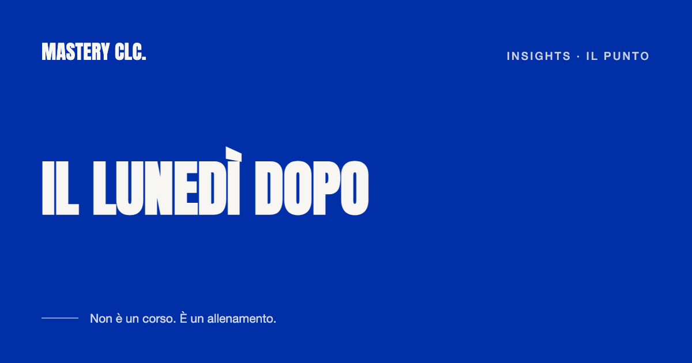
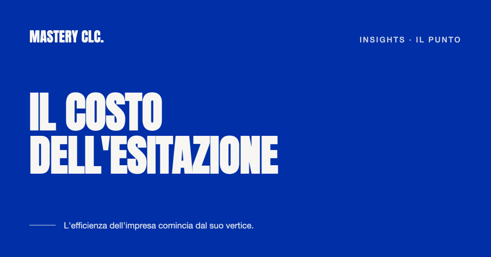
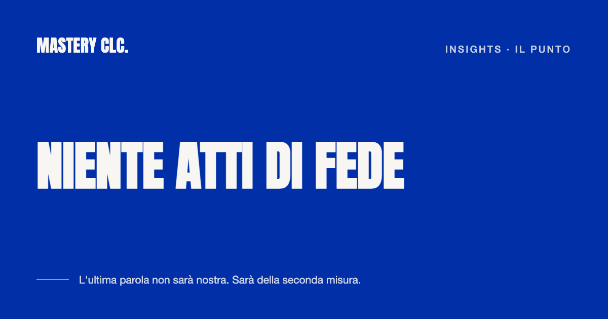

Insights · Il punto
Dove nessuno ha guardato
Le imprese si fanno misurare dappertutto: bilanci, gestionali, certificazioni. Sul modo in cui il gruppo dirigente esercita il ruolo, invece, mai uno strumento: si va a braccio.
Stavolta sul tavolo c'è chi guida.
Il percorso C-OneContinua
Altri insight

Il punto Il lunedì dopo I corsi finiscono tutti allo stesso modo: due giorni fuori sede, un raccoglitore di slide, il lunedì ognuno alle vecchie abitudini. Leggi
Il punto Il costo dell'esitazione Un vertice che esita o si divide rallenta tutta la struttura: le decisioni si fermano ai confini dei reparti, i tempi si allungano lungo la catena. Leggi
Il punto Niente atti di fede Un'impresa non paga un fornitore sulla parola. LeggiIl primo passo
Parliamone. Per anticipare i problemi o per risolverli adesso
Apriamo un canale riservato per confrontarci sulle sfide che stai affrontando come singolo manager o le complessità strutturali del tuo team di leadership e capire come applicare il metodo Mastery alla tua specifica dimensione di crescita.